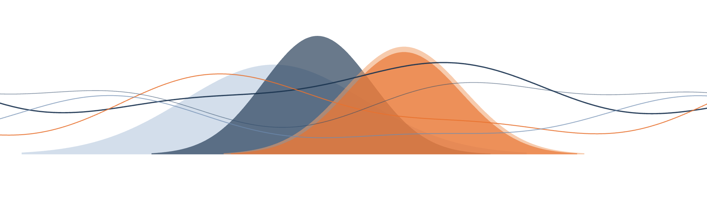
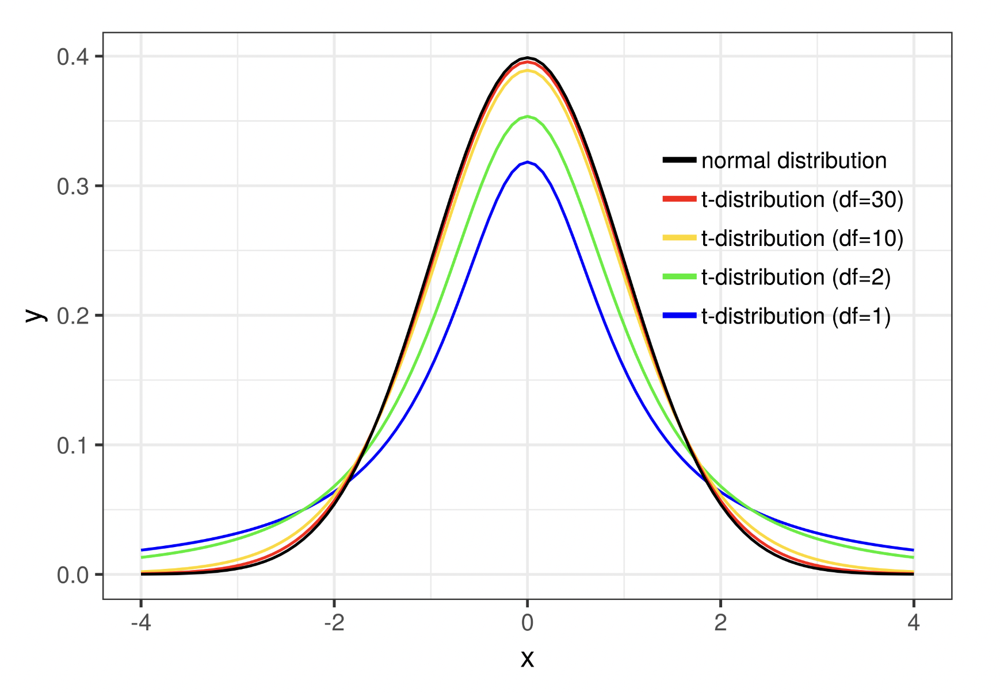
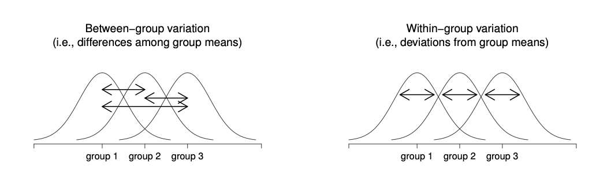
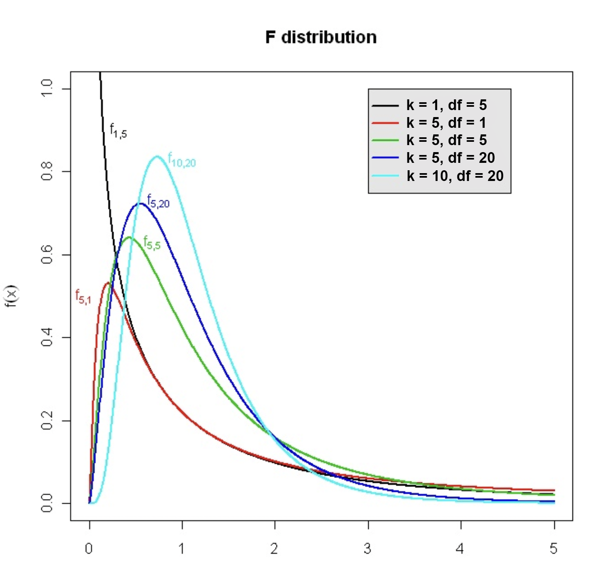
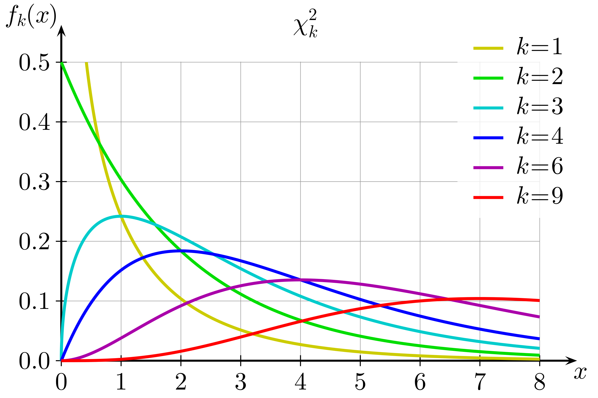
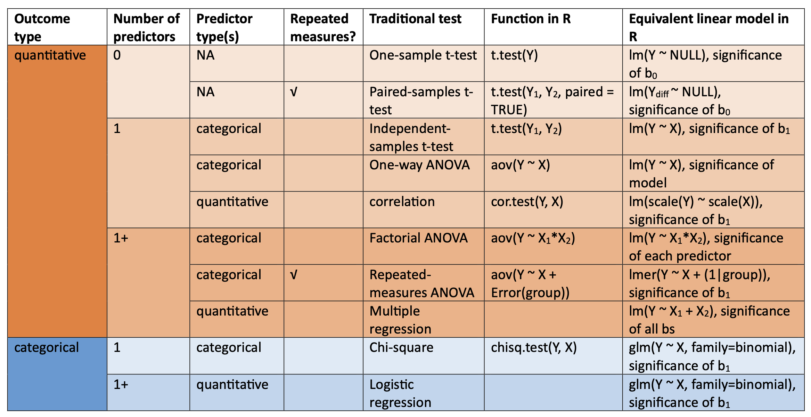

17 Connection to Other Statistical Frameworks

In this book so far you have spent a long time learning about how to make predictions and do inference with the general linear model. If you had any sort of statistics experience from before or have read prior research, you may be wondering at the lack of other statistical tests like the t-test, ANOVA, chi-square, etc. Indeed, some researchers exclusively use those key words and never talk about statistical models. So why have we focused on statistical modeling so much instead of these other approaches?
This chapter will answer this question, but also enable you to make connections with these other more traditional tools so that you can use both approaches flexibly.
17.1 Statistical modeling vs. traditional tools
Many of the most traditional statistical tools were originally developed in the early twentieth century, when researchers were creating methods for drawing conclusions from limited and uncertain data. These methods addressed recurring questions in scientific research: Is the average in one group different from a reference value? Do two groups differ? Are there differences among several experimental conditions?
With our statistical knowledge now, these are relatively straightforward questions to address. We’ve already learned ways we can do so with how we build and interpret a statistical model. And we can do these procedures automatically and near instantaneously on large amounts of data. But 100 years ago, computers as we know them did not exist. Statistical calculations had to be performed by hand with the help of mathematical tables and mechanical calculators. Thus, statisticians favored developing methods that required only a manageable set of calculations rather than ones that required extensive numerical computation.
However, this reality resulted in some limitations to the suite of traditional statistical tools. First, as we will soon see, they require several assumptions about data to be true and thus limit what estimands and research designs are possible. Second, they were developed one at a time from different perspectives, and thus learning about them individually masks what connections they share. Thirdly, they were developed from the get go with inference in mind, so to begin to use any of them one must understand sampling distributions, standard error, hypotheis testing, etc. - pretty abstract stuff to start with on one’s statistics learning journey.
Modern statistical computing changes what is practical. We can run complex mathematical algorithms and simulate probabilistic processes without having to derive and carry out every calculation by hand. More importantly, these developments make it possible to organize statistical thinking around a more general idea: representing the process that could have generated the data with a statistical model. Rather than restricting the research studies we do to produce the specific kinds of data that a set of traditional tools can handle, we can flexibly adapt a statistical modeling process to whatever our ideas and datasets need.
It’s worth pointing out that these traditional tools aren’t wrong. Many are still regularly used by practicing scientists. In fact, many actually turn out to be special cases of the general linear model framework covered in this book. The reason this book first taught you statistical modeling is because this more general approach builds basic statistical principles and possibilities in your mind that will serve you well in future research endeavors. But now, we will connect those basic principles to common, traditional flavors of analyses. By understanding these connections, you can recognize traditional procedures as particular applications of general principles rather than as isolated techniques to memorize.
17.2 One-sample t-test
The idea of a sample mean has come up again and again throughout our journey in this book. This is because many research questions revolve around the idea of a typical value to expect for something. Also for this reason, one of the earliest statistical tools built for doing inference was meant specifically to estimate the population mean from which a sample came. This is known as a one-sample t-test.
Let’s say you are a track coach and you’re assessing the progress of your runners’ training. They all recorded their best times for running the 400m when they initially joined the team. Now after a month of training with various drills, you want to know if they, as a group, have improved.
Below we import some data from your team. We will filter it down to just those scores at tryouts and 1 month later at the first meet, then calculate their change in running times. Negative scores mean they got faster (less time to complete the 400m), positive scores mean they ran slower.
If our question is restricted to just our team of runners and no one else, we can figure out their improvement really easily. We simply find the mean of their change scores:
Great! This number means that, on average, our team ran faster than before after training for a month. If we only care about evaluating our current team, we can stop here and don’t need to do any inference.
But let’s say our question goes beyond just our team. If we were to recruit new runners the following year, would they also improve their scores with this training regimen? Is it good enough to use for everyone? Now we are hypothesizing about data we don’t have. At this point we need inferential statistics.
A one-sample t-test answers a particular question: is the mean of some data \(\bar{x}\) likely or unlikely to be from a population with a specific \(\mu\)? In other words, if we think our data sample is drawn from a population with a mean of \(\mu\), is it reasonable or surprising to find that our sample’s mean is the value we measured?
If this questions sounds like what we were talking about with null hypothesis significance testing last chapter, you’d be correct. A one-sample t-test is ultimately a question about a mean estimate and the probability that it comes from a particular mean population value. Thus to perform a one-sample t-test, our estimand must be the mean, and we must be doing null hypothesis testing.
In the case of our specific example, our research question is: is our data sample likely to happen even in a population of runners who on average didn’t improve? In order to do use one-sample t-test to answer this question, we first need to set down our idea about what \(\mu\) should be. This is specifying the null hypothesis. For our particular example, the data we are evaluating are improvements in running time. We want to know if these data came from a population of scores where there’s no improvement. In such a population some people might run a bit faster than their initial time, some a bit slower, but on average there’s no change. Thus, to set our null hypothesis, we’d say: \(H_0: \mu = 0\).
When we calculated our data sample earlier, it was -0.349, not 0. Does that mean we can conclude these runners did not come from a population of no improvement? Not necessarily. Remember, due to sampling error, it is frequently possible to get a sample estimate that is not the same value as the population value. Thus we need a way to understand how surprising our sample estimate is, relative to what is expected to happen when randomly sampling from the population.
Enter the t-value. We first encountered it last chapter, as a way of scaling the difference between a sample and hypothesized population mean by the standard error of that population. For a one-sample t-test, this is calculated as:
\[t = \frac{\bar{x} - \mu}{\hat{SE_{\mu}}} \tag{17.1}\]
then, \(\hat{SE_{\mu}}\) is estimated as:
\[\hat{SE_{\mu}} = \frac{s}{\sqrt{N}}\]
Where \(s\) is the sample standard deviation. All this together means that a t-value will be larger when there’s a bigger difference between our sample mean and the hypothesized population mean, or when the standard error is smaller.
If we were to repeat this t-value calculation for many samples when the null hypothesis is true, we could build up a t-distribution. The t-distribution is shaped very much like the normally-distributed sampling distribution, except for when samples are small - small samples make the \(\hat{SE_{\mu}}\) estimate more unstable, increasing the thickness of the distribution tails. This can be seen in Figure 17.1.

Treating the t-distribution as a probability distribution, the cumulative probability outside of a calculated t-value is the corresponding p-value for that t. The smaller the p-value, the more surprising it is to get a sample mean like ours relative to what we thought the true \(\mu\) was. If the associated p-value is <0.05, we would decide it’s so surprising that our sample probably came from a different sort of population instead - one with some alternative \(\mu\).
A one-sample t-test is thus appropriate for a specific situation: when you have a descriptive research question, your estimand is specifically the mean of one variable, and you have a hypothesis about the population mean that you want to reject. If you had a different research goal, estimand, or no hypothesis, a one-sample t-test would not be appropriate.
R provides us with a built-in function t.test() to quickly compute a one sample t-test. Minimally, it needs a vector of data as an argument. This vector is all the scores in a sample you want to test.
The output of this function gives us information about the calculated t-value (-1.9294), the degrees of freedom for the test (N-1 = 9), and the p-value (0.08575). It also gives us a 95% CI for our estimate of the mean, [-0.758, 0.060]. Note that a t-value can be positive or negative, signifying if our sample mean is higher or lower than the hypothesized population mean.
Based on these results, there is not enough evidence to reject the null hypothesis that our training regimen results in no improvement. It is plausible that our sample came from a population of people who do not improve with this training regimen.
The different parts of doing a t-test (calculating a mean, null hypothesis, standard error, and p-value) are all concepts you’ve learned before. For this reason, a t-test is actually just another way of getting to the same answer as we previously did with the general linear model. Check out the t and p values in the model output below, and compare them to the results of the above t-test:
In the null model version of the general linear model framework, we are estimating the sample mean as \(\hat{\beta_0}\) and evaluating if it is significantly different from 0. In a one-sample t-test, we are evaluating whether a sample mean \(\bar{x}\) is significantly different from the null hypothesis \(H_0: \mu = 0\). These are the exact same question, just derived different ways. Thus, you can get the same result using a null model form of the general linear model or the one-sample t-test!
Remember that by default in the R output of a general linear model, the significance of \(\hat{\beta_0}\) is specifically evaluated against a null hypothesis where \(\beta_0 = 0\). If we wanted to change what that null hypothesis value was, we’d need to use the hypotheses() function from marginaleffects as we did last chapter. In the one-sample t-test code, we can change that value in the t.test() function. For instance, let’s imagine that instead of running improvement, we are interested in whether our team’s new running times are significantly better than the Division III men’s track and field recruiting cut off of 51.76. First we calculate the mean of everyone’s new running times:
Then we specify our null hypothesis as \(H_0: \mu = 51.76\). This is a different null hypothesis than before. Now, we are wondering if our sample is likely to come from DIII track and field athletes, or if we should conclude they come from an even faster population.
Then we run the t-test to see if our sample mean is significantly different from this hypothesized population mean. To specify a null hypothesis in a t-test that is different than 0, add the mu= argument to t.test() with this specific null hypothesis value.
Based on these results, our sample mean of 48.354 would be very unusual if it were drawn from a population with \(\mu = 51.76\) (p < 0.001). We therefore reject this null hypothesis in favor of the alternative hypothesis that our team is from a different population.
17.3 Two-sample t-test
A one sample t-test is used when you have one group of data and want to understand how likely it is that that one group came from a particular population. If you have two separate groups of data and want to be able to distingush them from each other, this calls for a different approach. The independent samples t-test or two-sample t-test was invented to address this need.
Let’s say you’re still the track coach, but this time you want to compare how two different kinds of training impact your athletes. This time, you have half the team run track drills for a month and half the team do weights in the gym. Afterwards, you assess their running time on the 400m at their first meet. In this situation you no longer have one group of data like last time. You have two groups who went through different experiences that might make them different from each other.
An independent samples t-test answers the question “are these two groups likely drawn from the same population?” The null hypothesis of this question would be:
\[H_0: \mu_1 = \mu_2\]
Where \(\mu_1\) is the population from which group 1 came, and \(\mu_2\) is the population from which group 2 came.
An independent samples t-score is calculated a bit differently than a one-sample t-score. This one comes out to:
\[ t = \frac{\bar{x}_1 - \bar{x}_2}{s_p\sqrt{\frac{1}{N_1} + \frac{1}{N_2}}} \tag{17.2}\]
where \(s_p\) stands for the pooled standard deviation, a way of combining the standard deviations of two samples:
\[s_p = \sqrt{\frac{(N_1 - 1)s^2_1 + (N_2 - 1)s^2_2}{N_1 + N_2 + 2}} \tag{17.3}\]
While this equation is more complicated, in general this t-score gets larger based on the same factors as the one-sample t-test. You will get a larger t-score, and thus more likely to reject the null hypothesis, if there is a large difference between the group means or there is small within-group variation.
In R we can use the same t.test() function to do a two-samples t-test. We just need to include more arguments. Specifically, we need to pass the separate groups to compare as separate vectors, and then add a var.equal= flag to tell this function to use the pooled variance.
Based on this result, what would you conclude about the null hypothesis that the groups came from the same population?
Because of the way one-sample and two-sample t-tests are derived, they imply that you should think of separate groups as different entities. But what if you have a lot of groups, or no clear grouping? The logic of a two-sample t-test can’t be extended to these different cases. That’s why this book taught you to think about explanatory and target variables instead. In this case, rather than thinking of weight-trained athletes as different than track-trained athletes, we can instead realize that all of these people have the same target variable we’re measuring: their running time. And we expect that running time to be influenced by an explanatory variable we manipulated: training regimen. Thus, we can conceptualize this two-sample problem as a data generation process where the conditional mean of running time is influenced by training regimen. Indeed, by building this as a statistical model, we can get the exact same answer again:
As you can see, this result is again the same. The model parameter \(\hat{\beta_1}\) estimates the difference in group means and is significantly different than 0 (p=0.0483). It seems like the weight-training regimen resulted in significantly different running times than the drill-training regimen. This is the same answer as testing whether the t-test for the group difference was significant.
Notice that in the t.test() command above we wanted to compare values on the running time variable for the two different groups, so we divided the data in this variable into two separate vectors. We wouldn’t be able to do this if it wasn’t possible to split the data into just two groups (if you try to add a third vector the to t.test() code, it would break!). To use lm() on the other hand, we don’t separate our data into different datasets, nor do we need to change our approach when our explanatory variable is categorical vs. numeric. We merely indicate what information we think is the target variable and what information we think is the explanatory variable.
In fact, because it’s the same question in the end, you can also use the lm() model formula syntax as an alternate way of using the t.test() function:
17.4 ANOVA
Realizing this limited use case of the two-sample t-test, early statisticians built another tool to handle the case when there are multiple groups.
17.4.1 One-way ANOVA
For example, instead of comparing just the athletes who did track training vs. weight training, say you also have athletes who did neither type or both types of training. There’s no t-test that helps you analyze more than two groups. Instead, we need to expand into a different kind of test known as a one-way ANOVA.
To start with this tool, we recognize that we’re interested in comparing the average 400m running time for the 4 different training conditions. In that sense, we’re still hypothesizing about differences in means, but between several groups. Specifically, it would be pretty uninteresting if no type of training made any difference in running time and all athletes were from the same population. Thus, our null hypothesis is:
\[H_0: \mu_1 = \mu_2 = \mu_3 = \mu_4\]
Where each \(\mu\) is the population from which that group number came. If this null hypothesis is rejected, then we decide at least one of the four groups comes from a different population; at least one training condition results in different running times. We’re not trying to predict which group(s) is different from which other group(s), just that at least one of those equal signs in the null hypothesis is not true.
Because there are many different ways the null hypothesis could be false (1 \(\neq\) 3, 2 \(\neq\) 3 & 4, etc.), this null hypothesis isn’t possible to test in the t-test framework. There isn’t one t-statistic to calculate. Instead we use an ANOVA procedure, which stands for “analysis of variance”.
The way this works is by looking at variation in data and figuring out how much variation is within a group of data vs. between different groups.

To quantify variation, we’ve used the idea of sum of squares before. We can use it again here to represent deviations between groups or within groups. We’ll denote this as \(SS_w\) for the within-group variation, where \(\bar{y}_g\) is the mean of some group G and \(y_{G,i}\) is an individual i’s score within G.
\[SS_w = \sum_{i=1}^{N}(y_{G,i}-\bar{y}_G)^2\]
In contrast, here is \(SS_b\) for the between-groups variation, where \(\bar{y}\) is the mean of all data regardless of group (the marginal mean of \(y\)):
\[SS_b = \sum_{i=1}^{N}(\bar{y}_G - \bar{y})^2\]
Now that we’ve defined these different types of sum of squares, we can ask a specific mathematical question: is there more variation between the groups of data than within a group? Are the differences between individual scores because of which group they belong to, or just randomness? A ratio is a good way to represent this question:
\[\frac{SS_b}{SS_w}\]
But wait, if we’re calculating sum of squares then we know it’s problematic to not consider the size of our dataset. Thus we should convert these values to mean squared error (MSE) by dividing SS by the degrees of freedom. As we learned in Chapter 15, the degrees of freedom corresponds to the number of ways data can vary once we have some existing information that constrain it. For the within-groups variability, what we’re calculating is the variation of the individual observations (N data points) around the group means (all the \(\bar{Y}_G\) estimates). This means the degrees of freedom are the sample size N minus the number of mean estimates made, G.
\[df_w = N - G\]
In contrast, for the between groups variability, we’re interested in the variation of the group (G data points) around the marginal mean (one \(\bar{y}\) estimate). Therefore, the between-groups degrees of freedom here are:
\[df_b = G - 1\]
The ratio of mean squared differences then is:
\[F = \frac{\frac{SS_b}{df_b}}{\frac{SS_w}{df_w}} = \frac{MS_b}{MS_w}\]
This ratio has a specific name: it is the F-ratio or the F-statistic. That’s all a one-way ANOVA does: it calculates an F-statistic to compare between to within-group variation.
If we were to calculate the F-statistic for repeated samples where all groups within the sample came from the same population (null hypothesis is true), we could build up an F-distribution with the below shapes, depending on what the df-between (df1) and df-within (df-2) were.

If the value of an F-statistic in our sample is sufficiently large, that means the differences in the group means are so large that we’d be very surprised to hear they were actually sampled from the same population. We’d reject the null hypothesis in favor of an alternative, that at least one came from a different population.
That brings us to doing a one-way ANOVA test ourselves. There are a couple different implementations of ANOVA tests in R. The most basic is built into base R, called aov(). To use this one, you don’t need to save the data for the different groups into different vectors - we can keep it in one dataset like with a statistical model and simply pass a formula to ask how the outcome variable varies as a function of group.
The output of this code tells you \(SS_b\) (Sum of Squares in the ‘condition’ column) and \(SS_w\) (Sum of Squares in the ‘Residuals’ column). To get the corresponding F-statistic and p-value, wrap this command in the summary() function:
Since this p-value is <0.05, we’d reject the null hypothesis that all groups of athletes come from the same population. At least one of the group means is sufficiently different from at least one other that we decide there are different populations involved here - meaning, type of training matters for running time.
However, as you might be expecting by now, this exact sample analysis is also possible to do within the statistical modeling framework. Here is the output of a general linear model using training_condition to predict time:
First we notice that these models have the same F-statistic, same degrees of freedom for that F-statistic, and same p-value of the F-statistic. Last chapter when hypothesis-testing a model’s \(\hat{R^2}\) value, we said the sampling distribution of these estimates would form a shape we called the F-distribution. That is the same F distribution here. Hence, a hypothesis test of how much variance a model can explain is the same as running a one-way ANOVA test, if the explanatory variables were different categorical groups.
Second, let’s calculate the \(SSE\) of glm_results:
This is the same number as the \(SS_w\) / Sum of Squares Residuals value in the ANOVA summary. Additionally, if we subtracted this value from the sum of squares of the marginal target distribution:
We’d get \(SS_{model}\), or how much of the original variation the model could explain away. This is the same number as the \(SS_b\) / Sum of Squares condition value in the ANOVA summary. Thus, a one-way ANOVA test is the exact same as testing the performance of a a whole statistical model with multiple categorical predictors.
Now, there are some differences between a one-way ANOVA and GLM on the other kinds of information you get in the output. Specifically, an ANOVA only tests the null hypothesis that all groups are the same. It does not tell you the significance of differences between particular pairs of groups. Any one pair being different results in rejecting the ANOVA null hypothesis, but you don’t know which pair(s) of groups were different. To get this answer, you need to perform a two-sample t-test on each unique pair.
Meanwhile, a model output gives you some of the group differences by default, along with their p-values. That is the meaning of each \(\hat{\beta}\) estimate. When an explanatory variable is categorical and used in a statistical model, R automatically dummy-codes it. When there are more than two levels to that categorical variable, the dummy-coding procedure splits the variable into multiple binary variables. Thus each \(\hat{\beta}\) estimate tells you the difference between the group chosen as the reference group and each other group. For instance, the estimate for “conditionno-training” in the output of glm_results tells you that there is a difference of 2.04 between the conditional mean of the “both-training” condition (the reference condition) and the “no-training” condition, such that people who had no training took 2.04 seconds longer to run on average that people in the “both-training” condition.
But what if you wanted to know the difference in means between two conditions that were not the reference group? E.g., what if your estimand was the difference between “no-training” and “track-training”? There are a couple things you could to in this situation. First, you could recode the training_condition variable as a factor with a different order to change which group is chosen as the reference group.
Alternatively, hypotheses() in marginaleffects lets you specify not only which value of a null hypothesis to use, but which estimates to test if there are multiple. To test the null hypothesis of no difference between the “none” and “track” training conditions, we can realize that the difference between these two conditions can be calculated from the difference between each of them and the reference group: (A-B) - (A-C) = A - A - B + C = C - B. Thus, our estimand is \(\beta_2 - \beta_1\). We can specify this in the hypothesis= argument of hypotheses():
Now, our estimate is -0.717. This is the difference in means between the track training group and the no training group. The sampling distribution of that estimate has a standard error of 0.493, a z-value of -1.45, a p-value of 0.146, and a 95% confidence interval of [-1.68 0.25]. Altogether, this does not reject the null hypothesis of no difference between these specific groups. The significance of the overall model prediction accuracy / ANOVA test comes from some other group difference.
17.4.2 Factorial ANOVA
Of the traditional tools we’ve covered so far in this chapter, you can probably detect a general trend. So far the tools were designed to handle a fairly simple experimental design: each participant falls into only one of several groups, and we want to know whether these groups have different means on some outcome variable. This assumes that there is only one variable that matters for differences in the outcome value - which of these groups someone is in.
But in the multivariable version of a statistical model, we learned that multiple different explanatory variables can have separate effects on an outcome. This might be a better way of understanding our athlete data - instead of four different categories of training regimens, maybe there is a more general effect of track training and of weight training that combine in order to produce someone’s running time. Being in the “both” condition just means being a part of both of these general groups, instead of its own unique category.
In the ANOVA approach to statistics, taking into account the effect of multiple grouping variables is called factorial ANOVA. Sometimes it is also called something like two-way ANOVA (which means two separate predictor variables) or 2x2 ANOVA (meaning there are two levels in the first predictor and two levels in the second). Like the one-way ANOVA, factorial ANOVA is a method of comparing group means to see if they come from the same population. So a sensible place to start would be to make explicit a null hypothesis for these means. However, the fact that the different training groups are made of combinations of multiple variables means there are several different means that one might be interested in. To see this, let’s start by thinking about all the different sample means that we can calculate for this kind of design:
| No weight training | Weight training | Any weight training | |
|---|---|---|---|
| No track training | 49.071 | 47.323 | 48.047 |
| Track training | 48.354 | 47.134 | 47.774 |
| Any track training | 48.563 | 47.229 | 47.969 |
In this table, the number in each cell stands for the group mean with that combination of track training type (row) and weight training type (column). The values in the last row are the means of each weight training group regardless of what type of track training they did. The values in the last column are the means of each track training group regardless of what type of weight training they did. The bottom right cell holds the overall mean running time of everyone regardless of their value on any training variable.
These are all group means, which are statistical estimates. That means there are population parameter versions of these values that our estimates came from. We can express our table above with those values instead:
| No weight training | Weight training | Any weight training | |
|---|---|---|---|
| No track training | \(\mu_{11}\) | \(\mu_{12}\) | \(\mu_{1.}\) |
| Track training | \(\mu_{21}\) | \(\mu_{22}\) | \(\mu_{2.}\) |
| Any track training | \(\mu_{.1}\) | \(\mu_{.2}\) | \(\mu_{..}\) |
We have a bunch of \(\mu\) values with different subtexts. \(\mu_{11}\) means the population mean for the group in the first value of track training type and first value of the weight training type. \(\mu_{12}\) would be the population mean for the group in the first value of track training type and second value of the weight training type, and so on. A dot in the notation means any value for that variable.
Now that we have this notation, it is straightforward to formulate and express some null hypotheses. Let’s suppose that the goal is to find out two things: firstly, does track training have any effect on running time? Secondly, does weight training have any effect on running time? Formally, we write down our null hypotheses in terms of the equality of marginal means. We also create a separate null hypothesis for each predictor we are interested in:
row means are the same: \(H_0: \mu_{1.} = \mu_{2.}\)
column means are the same: \(H_0: \mu_{.1} = \mu_{.2}\)
Since this is a type of ANOVA, to test these hypotheses we investigate the within and between sum of squares for each of these hypotheses. At this point, this is done the same way as a one-way ANOVA (which, in the case of just two group means like here, also reduces to being the same thing as an independent samples t-test - it’s all connected!). The one-way ANOVA is applied for the effect of track training and separately for the effect of weight training.
In our dataset, information about athletes’ training is also stored in two columns track_training and weight_training. Try using the aov() function yourself with the formula time ~ track_training + weight_training and the dataset meet1 in order to run this factorial ANOVA.
In this table, remember we’re getting \(SS_b\) for the effect of each predictor (in the Sum Sq column) as well as 𝑆𝑆𝑤 for the within group variation (that which is not explained by the grouping variables). We also get a corresponding F and p value for each separate predictor that tells us whether there is a significant difference in group means for different levels of that predictor.
As you might guess, you can run a comparable test using a statistical model. It even uses the same formula:
Wait, we’ve found a situation where the p-values from the ANOVA analysis don’t exactly match those from the statistical model output. In the ANOVA output, the effect of track_training has a p-value of 0.189. In the model output, this effect has a p-value of 0.155. In this case, the factorial ANOVA is actually wrong. It’s wrong for a very small, but impactful reason:
As we can see here, there aren’t an equal number of data points in each level of each variable. In otherwords, our dataset is unbalanced. This isn’t a problem for the general linear model - it will still calculate the \(SS_{model}\) and \(SS_{error}\) of the model regardless of how many data points are in each condition. In the statistical model output then, the p-values we get are correct. But the way \(SS_b\) and \(SS_w\) are calculated in a factorial ANOVA is different, and depends on each group having the same number of datapoints. These should come to the same value as \(SS_{model}\) and \(SS_{error}\). But if the group sizes aren’t equal, these calculations are wrong and we get wrong p-values. To fix it, we’d have to change the math that ANOVAs are based on.
This adds another constraint to the situations in which using an ANOVA is appropriate. We can only use this test when our explanatory variables are categorical. In addition, we should only use it when the data within those cateogories is balanced. A statistical model, on the other hand, can manage any type of explanatory variable, balanced or unbalanced. It implements a more modern and flexible analysis than ANOVA does.
17.5 Correlation & multiple regression
So far we are seeing how different traditional statistics tools were developed for specific situations. Initially that meant we had to remember all these different tools, and were limited in the kinds of research studies we could do by the range of tools we had.
This trend continued with the development of correlation and regression. T-tests and ANOVAs can only handle groups/categorical explanatory variables, but many researchers also wanted to be able to express relationships between two numeric variables.
We’ve already learned about correlation way back in Chapter 6 as a way of quantifying the strength of association between two variables. To review, a Pearson correlation calculates the covariance between two variables, \(s_{XY}\), and standardizes that covariation by dividing by the product of the two variables’ standard deviations, \(s_Xs_Y\). In R, we can get this value easily with the cor() function applied to two separate vectors that hold the X and Y variables.
For instance, if we are interested in the correlation between an athlete’s height and how fast they run the 400m:
But this number isn’t only a description of the relationship between these variables in our sample. We can use this as an estimate of the relationship in the population, \(\rho\) (the Greek version of r, “rho”). That means we can also set a null hypothesis and use inferential statistics to tell us if our estimate likely came from a population with this null hypothesis.
A correlation expresses strength of a relationship between these variables, so our null hypothesis about a correlation is that there is no relationship; \(\rho = 0\).
\[H_0: \rho = 0\]
The sampling distribution of \(\hat{\rho}\) estimates also has the t-distribution shape. So to test this null hypothesis, we calculate a t-score for a correlation as:
\[t = \frac{r}{\sqrt{1-r^2}}\sqrt{N-2} \tag{17.4}\]
In R, we can get this value and the associated p, as well as the correlation estimate, using the cor.test() function.
But again, we can get this exact same answer if we simply specify a general linear model between the z-scored values of these variables:
Notably, we don’t even have to scale the variables if all we care about is looking at the p-value. The significance of the explanatory variable’s effect is the same regardless of the units it’s in.
But a correlation can only handle relationships between two variables - one explanatory and one target. To be able to integrate the effects of multiple quantitative explanatory variables, that is what multiple regression and the general linear model was developed to do. At that point, people realized all the prior tests can also be answered with this same framework. All hail the GLM!
17.6 Other traditional tools
You now know about a great many ways to analyze data with one or multiple categorical or quantitative explanatory variables. You also now know multiple approaches for each of these kinds of analysis, using either the general linear model or traditional statistical tools. You’ve done a lot of work to get this far!
But this is an Intro to statistics book, which means there’s still a lot of stuff we haven’t even touched. Statistical models can handle these additional situations too, which you can read about in the advanced chapters at the end of this book. For now, we will briefly cover a few more traditional statistical tools, but know that more advanced statistical modeling procedures can perform these analyses as well.
17.6.1 Non-numeric target variable
Across all the types of models and tests we’ve learned so far, one thing has been constant - we’ve always been predicting a numeric target variable. But there are research questions concerning categorical target variables as well: what political party is someone likely to join, whether or not someone is admitted to college, etc. Ssing a t-test, ANOVA, etc. with a categorical outcome variable is not appropriate.
Thus we need a different approach. Logistic regression or ordinal regression are statistical model approaches that can handle this case. The traditional version of this approach, when you have both a categorical predictor and outcome, is called a chi-square test.
Consider a dataset of hospital patients and see how their levels of anemia relate to their appetite:
In these data, values for both of these variables were stored categorically. One could imagine recording severity of anemia and strength of appetite as quantitative, but that’s not the data we have here. Patients were only coded as having anemia or not, and a good or poor appetite. Thus, we don’t have any information about the quantitative difference between these variable levels. They are categorical.
A chi-square test handles this problem by reasoning about probabilities of certain values, rather than the values themselves. Let’s break down how to do this. First, we can see that each person falls into one of four groups - either they have anemia or not, and they have a good appetite or not. We can put the number of people in each of these groups in a table like so, called a contingency table:
| Anemia | No anemia | Row total | |
|---|---|---|---|
| Good appetite | 6 | 133 | 139 |
| Bad appetite | 10 | 9 | 19 |
| Column total | 16 | 142 | 158 |
From these counts, we can calculate what proportion of people in the dataset are in each group. ~4% of the people in this data are anemic with a good appetite (6/158) while 6% are anemic with a bad appetite (10/158). These numbers are small, but that’s because not many of our patients are anemic. If we looked at the anemic patients only, 37.5% have a good appetite (6/16) while 62.5% don’t (10/16).
If we thought anemia was unrelated to appetite, we might expect some people with anemia to have a good appetite and some to have a poor appetite. Further, we’d expect the proportion of people with good/poor appetites to be the same regardless of whether or not someone has anemia. In other words, knowing someone’s anemia status doesn’t change our prediction of poor appetite proportion. This is the null hypothesis for a chi-square test. Formally:
\[H_0: P(poor|anemic) = P(poor|not anemic)\]
However, instead we might actually believe that having anemia increases your risk of a poor appetite. In this case, we’d expect the probability of having a poor appetite to be different in the anemia condition compared to the no-anemia condition. A \(\chi^2\) or chi-square statistic (pronounced “kai-square”) represents the ratio difference in these probabilities.
That’s what we’d expect from the population of people with anemia and appetites. But of course, our sample is just a sample, so the actual proportions of these probabilities in our data might be slightly different even if the null hypothesis is true. The sampling distribution of \(\chi^2\) looks like so, depending on how many rows and columns in the contingency table that you have (k = (r-1)(c-1)):

While 62.5% of anemic patients had a poor appetite, only 6.3% of non-anemic patients did (9/142). Is this a big enough difference in the probability of a poor appetite between the two conditions to consider them to come from different populations? A chi-square test calculates a chi-square statistic for your sample and then finds an associated p-value for how likely it is your sample came from a population with no difference in group probabilities.
To perform a chi-square test in R, we can use the chisq.test() function with two separate vectors that each hold the values for the predictor and outcome variables.
17.6.2 Repeated measures tests
Another broad category of analyses that we haven’t addressed has to do with repeated measures, or data points that are not completely independent of each other.
The type of statistical model built for this purpose is called a multilevel model. This simplest traditional tool version of this situation is when you have two scores per person - you did a within-subjects experiment where you measured something about them before treatment, and then again on the same variable after treatment. You want to know if scores on average changed from before to after. For example, going back to our track training data, we may wonder if our athletes continued to improve between meet 1 and meet 2.
Your first instinct might be to do an independent samples / two sample t-test for the scores during meet 1 and the scores during meet 2:
R doesn’t stop you from doing this, but it is incorrect. This is because the independent samples t-test assumes, well, that the samples are independent. That they contain completely separate sets of people. If this isn’t actually true of your data, the p-values will be wrong.
In contrast, a paired-samples t-test is for when you have non-independent data. This test looks at the change in scores within a person to see if the mean of that change is non-zero.
To run a paired-samples t-test in R, we can still use the t.test() function while adding a paired=TRUE argument.
The degrees of freedom here is less because we technically don’t have 78 unique points of data - we have 39 unique people, measured twice. But our p-value is much lower because this other way of measuring differences in scores results in a much bigger mean difference.
An extension of a paired-samples t-test is when you have some predictor variables that may be influencing the size of the score difference within a person. If that predictor variable(s) is categorical, we can use a repeated measures ANOVA. If the predictor variable(s) is quantitative, we can use the multilevel model mentioned previously.
17.7 Summary of traditional tests
Altogether, the purpose of this chapter is to acquaint you with the most common traditional statistical tools used in psychology research. However, you should also understand the ways in which these tools are limited.
This book taught you statistical modeling first because it is a more general framework that can be tweaked to serve you in many situations, rather that requiring you to memorize many different tools. In addition, thinking about the data generation process - the mechanisms that a statistical model is trying to capture - is beneficial for developing better scientific theory. “Is there a difference between means?” is not a particularly informative question to ask. Rather, “what creates differences, and how does it do so?” gets you closer to understanding the ways the mind and behavior works. Statistical modeling, from simple to complex versions, helps you test those kinds of hypotheses as well as investigate various different kinds of questions, from descriptive to predictive to explanatory. This general approach is called “model-based inquiry,” and it is becoming clear that this new framework is not only helpful for students when first learning about data analysis, but helpful for practioners to do better research.
For ease of memory, here is all the important information of this chapter stored in one table. It tells you when various traditional tests can be used and what the comparable statistical model version is. It is good to know about these traditional tools because many other people still use them. But you are encouraged to hold on to the statistical modeling information that the rest of the book has emphasized, and carry that forward in your future statistical practice.

{#fig-ch16-testreference}17.8 Chapter summary
17.8.1 Learning goals
After reading this chapter, you should be able to:
- perform t-tests, ANOVAs, and correlation tests on data
- identify which test to use when there is 0, 1, or multiple explanatory variables
- identify which test to use when an explanatory variable is categorical vs. numeric
- construct statistical models that give you the same answers as these traditional tools
17.8.2 New concepts
- one-sample t-test: A traditional statistical tool that asks whether a sample of data likely came from a population with some mean value \(\mu\).
- t-distribution: The distribution shape created from t-statistics calculated from many sample mean estimates.
- two-sample t-test: Also known as independent samples t-test; a traditional statistical tool that asks whether two samples of data likely came from the same population.
- one-way ANOVA = A traditional statistical tool that finds how much between-group vs. within-group variation is in a dataset, and if that is expected under the null hypothesis of no group differences.
- F-statistic = The ratio of between-group mean squared error relative to within-group mean squared error.
- factorial ANOVA = A traditional statistical tool that identifies between-group vs. within-group variance among multiple intersecting categorical variables.
- unbalanced data = A dataset composed of multiple groups, but the number of observations per group is different.
- chi-square test = A traditional statistical tool that identifies whether the probability of membership in some categorical target variable changes as a function of membership in some categorical explanatory variable.
- paired-samples t-test = A version of a t-test that manages repeated measures data by analyzing pre-post change scores.